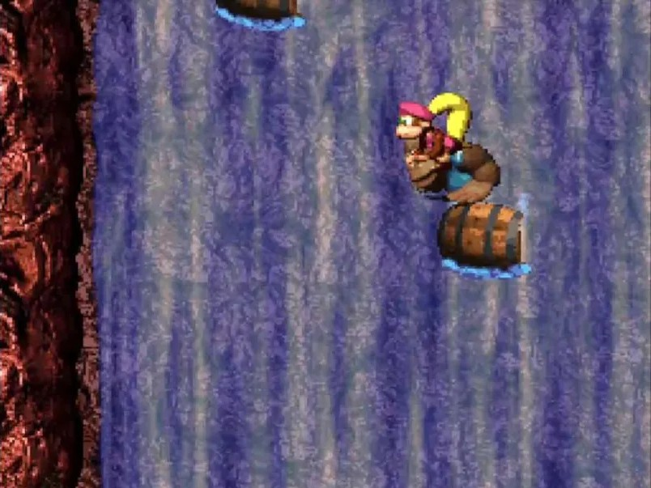
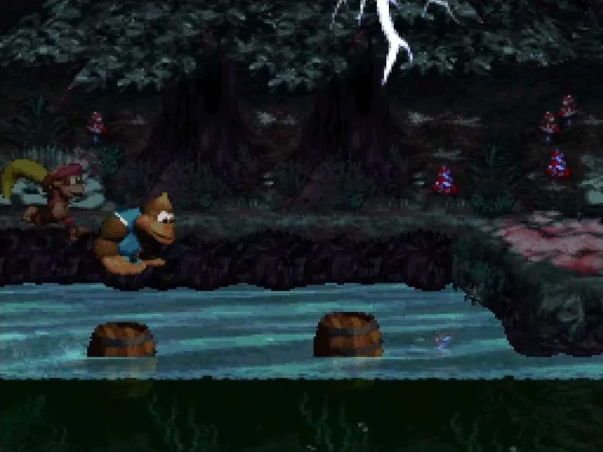

Les Mondes de Donkey Kong Country 3
Lake Orangatanga
Lakeside Limbo
Lakeside Limbo est le premier niveau de Donkey Kong Country 3 et le premier de Lake Orangatanga. Il se passe dans un village sur l'eau, alternant ainsi phases sur le pont du village et phases aquatiques. Dans ce niveau on rencontre Ellie l'éléphante, l'un des deux nouveaux alliés animaux de ce jeu.
Musique utilisée : Stilt Village
Musique utilisée : Stilt Village
Doorstop Dash
Doorstop Dash est le deuxième niveau du jeu et le premier se passant dans une grange ou un moulin. Ce niveau contient beaucoup de portes que l'on peut ouvrir temporairement en s'accrochant à un levier.
Musique utilisée : Mill Fever
Musique utilisée : Mill Fever
Tidal Trouble
Tidal Trouble est le troisième niveau et le deuxième à se dérouler dans un village sur l'eau. Bien que très similaire à Lakeside Limbo, ce niveau introduit Enguarde l'espadon dans ce jeu, privilègiant ainsi bien plus les phases aquatiques par rapport aux passages sur le pont.
Musique utilisée : Stilt Village
Musique utilisée : Stilt Village
Skidda's Row
Skidda's Row est le quatrième niveau et le premier à se passer dans la neige. Comme son nom l'indique, on y trouve beaucoup de Skidda, des kremlings roses qui glissent sur la neige. Ce niveau a un décor évolutif : au début, il est ensoleillé puis une tempête de neige s'installe progressivement au fil de la progression
Musique utilisée : Frosty Frolics
Musique utilisée : Frosty Frolics
Murky Mill
Murky Mill est le cinquième niveau et le deuxième à prendre place dans un moulin ou une grange. Cette fois-ci c'est Ellie qui devra faire l'intégralité du niveau toute seule. Bien que ce moulin soit mal éclairé, si Ellie voit une souris elle s'enfuira en courant de peur.
Musique utilisée : Mill Fever
Musique utilisée : Mill Fever
Belcha's Barn
Belcha's Barn est le sixième niveau du jeu et le premier boss. On y affronte Belcha qui crache des tonneaux contenant des insectes sur Kiddy et Dixie dans l'espoir de les faire tomber du terrain. Cependant, le duo de singe peuvent utiliser le contenu des tonneaux pour repousser Belcha.
Musique utilisée : Boss Boogie
Musique utilisée : Boss Boogie
Kremwood Forest
Barrel Shield Bust-Up
Barrel Shield Bust-Up est le septième niveau du jeu et le premier de Kremwood Forest. Il s'agit d'un niveau vertical, prennant place dans des arbres que Kiddy et Dixie doivent escaler. Des nombreux ennemis tenteront de ralentir leur progression en leur jettant des noix desquelles le duo peut se protéger à l'aide de tonneaux bouclier
Musique utilisée : Treetop Tumble
Musique utilisée : Treetop Tumble
Riverside Race
Riverside Race est le huitième niveau du jeu et le premier à se passer au bord d'une rivière. Ce niveau est une course, l'objectif est de battre le record de Brash, l'ours habitant dans Kremwood Forest. De plus, Dixie et Kiddy sont poursuivit en permanence par des abeilles et bien qu'elles ne peuvent pas les suivre sous l'eau, cela force tout de même le joueur à se dépêcher.
Musique utilisée : Hot Pursuit
Musique utilisée : Hot Pursuit
Squeals on Wheels
Squeals on Wheels est le neuvième niveau et le troisième et dernier à prendre place dans une grange. Beaucoup de souris tournent dans une roue, générant suffisament d'électricité pour maintenir certaines portes fermées. Vaincre ces ennemis est donc essentiellement aux Kongs pour pouvoir avancer dans le niveau. Parry l'oiseau y fait également sa première apparition.
Musique utilisée : Mill Fever
Musique utilisée : Mill Fever
Springin' Spiders
Springin' Spiders est le dixième niveau de Donkey Kong Country 3 et le deuxième à se passer dans les arbres. Pour aider les Kongs dans leur ascension cette fois il y a des araignées sur lesquelles il est possible de monter afin de se servir d'elles comme plate-formes pendant qu'elles bougent et sautent partout.
Musique utilisée : Treetop Tumble
Musique utilisée : Treetop Tumble
Bobbing Barrel Brawl
Bobbing Barrel Brawl est le onzième niveau et le deuxième niveau à prendre place au bord de la rivière de Kremwood Forest. Ellie est une fois de plus mise à l'honneur; ses capacités à soulever les tonneaux et à cracher de l'eau sur les ennemis lui permettent de traverser la rivière en évitant de tomber dans l'eau remplie de poissons prêt à la mordre.
Musique utilisée : Enchanted Riverbank
Musique utilisée : Enchanted Riverbank
Arich's Ambush
Arich's Ambush est le douzième niveau et le deuxième boss. Le combat contre Arich prend place dans les arbres de la forêt. Ce dernier se défend en tirant des toiles sur ses adversaires et en leur sautant dessus comme si c'était des proies.
Musique utilisée : Boss Boogie
Musique utilisée : Boss Boogie
Cotton-Top Cove
Bazza's Blockade
Bazza's Blockade est le treizième niveau et le premier de Cotton-Top Cove. C'est le premier niveau à se passer entièrement sous l'eau. Beaucoup de Bazzas (les ennemis poissons verts) font barrage aux Kongs, heureusement Enguarde est là pour les aider à les vaincre.
Musique utilisée : Water World
Musique utilisée : Water World
Rocket Barrel Ride
Rocket Barrel Ride est le quatorzième niveau et le premier niveau à prendre place le long d'une cascade. Pour arriver jusqu'en haut de la falaise, les Kongs peuvent se servir de tonneaux fusée qui bougent verticalement et qui les propulsent vers le haut.
Musique utilisée : Cascade Capers
Musique utilisée : Cascade Capers
Kreeping Klasps
Kreeping Klasps est le quinzième niveau et le troisième et dernier à se passer dans un village sur l'eau. Les Klasps, des kremlings se déplaçant sur des cordes dans des tonneaux explosifs, sont très présents dans ce niveau. En plus de cela, dans l'eau se trouvent encore des poissons des veulent mordre les Kongs à la moindre occasion. Il faut donc ainsi éviter d'aller dans l'eau en se déplaçant sur les cordes tout en évitant les Klasps.
Musique utilisée : Stilt Village
Musique utilisée : Stilt Village
Tracker Barrel Trek
Tracker Barrel Trek est le seizième niveau et le deuxième à se passer le long d'une cascade. Très similaire à Rocket Barrel Ride, cette fois les tonneaux bougent latéralement. Ellie fait une fois encore une apparition et peut vaincre les ennemis en leur crachant l'eau de la cascade.
Musique utilisée : Cascade Capers
Musique utilisée : Cascade Capers
Fish Food Frenzy
Fish Food Frenzy est le dix-septième niveau et le deuxième à se passer entièrement sous l'eau. Contrairement aux alliés animaux, Nibbla ne cherche pas à aider les Kong : il veut seulement se nourir. Si il ne trouve pas à temps de quoi manger, Nibbla choisira de manger l'un des Kongs. De plus il n'aime que certains poissons; s'il en mange un qu'il n'aime pas, il s'énervera et finira également par manger l'un des Kongs.
Musique utilisée : Water World
Musique utilisée : Water World
Squirt's Showdown
Squirt's Showdown est le dix-huitième niveau et le troisième boss. C'est encore une fois Ellie qui est mise en avant. Elle devra garder l'équilibre et ne pas tomber de la falaise pendant que Squirt essaye de la pousser en lui crachant de l'eau dessus pendant qu'elle-même tentera de tirer sur le boss.
Musique utilisée : Boss Boogie
Musique utilisée : Boss Boogie


Mekanos
Fire-Ball Frenzy
Fire-Ball Frenzy est le dix-neuvième niveau du jeu et le premier de Mekanos. Le niveau se passe dans une usine dans laquelle de nombreux ennemis tirent sur Dixie et Kiddy depuis le décor alors qu'ils progressent le long des cordes qui composent le niveau.
Musique utilisée : Nuts and Bolts
Musique utilisée : Nuts and Bolts
Demolition Drain-Pipe
Demolition Drain-Pipe est le vingtième niveau du jeu et le premier à être dans des tuyaux et des conduits. Après les chariots de mine et les montagnes russes, dans Donkey Kong Country 3 c'est une luge que l'on conduit à travers les tuyaux et les canalisations.
Musique utilisée : Hot Pursuit
Musique utilisée : Hot Pursuit
Ripsaw Rage
Ripsaw Rage est le vingt-et-unième niveau et le troisième à prendre place dans des arbres. Le principal danger ici est l'énorme scie qui découpe l'arbre alors même que Dixie et Kiddy sont en train de grimper vers le sommet. Un niveau assez difficile dans lequel il ne faut surtout pas être lent.
Musique utilisée : Treetop Tumble
Musique utilisée : Treetop Tumble
Blazing Bazukas
Blazing Bazukas est le vingt-deuxième niveau et le deuxième à se dérouler dans les usines de Mekanos. Cette fois, au lieu d'avoir des ennemis qui tirent depuis le décor, ce sont les bazukas (les kremlings armés de canon) qui sont mit à l'honeur pour tenter de vaincre les Kongs.
Musique utilisée : Nuts and Bolts
Musique utilisée : Nuts and Bolts
Low-G Labyrinth
Low-G Labyrinth est le vingt-troisième niveau et le deuxième à se passer dans des tuyaux et des conduits. Pas de luge dans ce niveau, mais un labyrinthe en apesanteur. La gravité est faible dans ces conduits et ralentit donc la progression des Kongs. Quawks y fait sa première apparition dans le jeu.
Musique utilisée : Pokey Pipes
Musique utilisée : Pokey Pipes
Kaos Karnage
Kaos Karnage est le vingt-quatrième niveau de Donkey Kong Country 3 et le quatrième boss. Dans les usines de Mekanos se cache Kaos, la nouvelle invention de K. Rool qui tente de brûler le duo de Kong et leur tire des rayons lasers dessus.
Musique utilisée : Boss Boogie
Musique utilisée : Boss Boogie
K3
Krevice Kreepers
Krevice Kreepers est le vingt-cinquième niveau de Donkey Kong Country 3. Il s'agit d'un autre niveau vertical cette fois se passant le long d'une montagne rocheuse. Tout comme Kreeping Klasps, de nombreux Klasps se déplacent le long des cordes qui composent le niveau.
Musique utilisée : Rockface Rumble
Musique utilisée : Rockface Rumble
Tearaway Tobggan
Tearaway Toboggan est le vingt-sixième niveau et le deuxième à se passer dans la neige. Comme Demolition Drain-Pipe, ce niveau est aussi un niveau en luge mais cette fois ci il faut la conduire entre les maisons enneigées et les ennemis.
Musique utilisée : Hot Pursuit
Musique utilisée : Hot Pursuit
Barrel Drop Bounce
Barrel Drop Bounce est le vingt-septième niveau et le troisième et dernier à prendre place le long d'une cascade. Les tonneaux de ce niveau tombent de la cascade et servent de plate-forme pendant qu'ils descendre le long de l'eau.
Musique utilisée : Cascade Capers
Musique utilisée : Cascade Capers
Krack-Shot Kroc
Krack-Shot Kroc est le vingt-huitième niveau et le troisième et dernier à se passer dans une usine. Squitter est de retour et il est la cible de Kroc, un kremling qui tire sur les Kongs depuis l'avant-plan. On ne le voit jamais en jeu mais il reste tout le niveau, visant en permanence pour blesser ses adversaires.
Musique utilisée : Nuts and Bolts
Musique utilisée : Nuts and Bolts
Lemguin Lunge
Lemguin Lunge est le vingt-neuvième niveau du jeu et le troisième et dernier à se dérouler dans la neige. Pas de luge pour les Kongs mais une avalanche de Lemguin, une espèce de pingouin qui glisse sur le ventre sur la glace dans le but de faire tomber les singes.
Musique utilisée : Frosty Frolics
Musique utilisée : Frosty Frolics
Bleak's House
Bleak's House est le trentième niveau et le cinquième boss. Ce combat un peu spécial est une bataille de boules de neige contre Bleak !
Musique utilisée : Boss Boogie
Musique utilisée : Boss Boogie

Razor Ridge
Buzzer Barrage
Buzzer Barrage est le trente-et-unième niveau et le premier de Razor Ridge. Dans la caverne qui compose ce niveau, on trouve beaucoup de Buzzer (des ennemis volants qui bloquent le chemin) qui peuvent être battus grâce à la capacité de Quawks à soulever des tonneaux pour se défendre !
Musique utilisée : Cavern Caprice
Musique utilisée : Cavern Caprice
Kong-Fused Cliffs
Kong-Fused Cliffs est le trente-deuxième niveau du jeu et le deuxième à prendre place sur une montagne. L'ascension se fait ici avec grâce à des cordes que Dixie et Kiddy peuvent grimper. Elles se consument cependant au fil du niveau, forçant le joueur à se dépêcher de monter.
Musique utilisée : Rockface Rumble
Musique utilisée : Rockface Rumble
Floodlit Fish
Floodlit Fish est le trente-troisième niveau du jeu et le troisième et dernier à se passer sous l'eau. Les Kongs atteignent les eaux profondes de Razor Ridge dans lesquelles il fait sombre; des poissons spéciaux émettant de la lumière sont là pour les aider. Enguarde aussi est d'un grand soutien.
Musique utilisée : Water World
Musique utilisée : Water World
Pot Hole Panic
Pot Hole Panic est le trente-quatrième de Donkey Kong Country 3 et le deuxième à se passer dans une caverne. Dans cette grotte on renconte successivement Squawks, Enguarde, Ellie et Squitter afin de progesser dans ce long labyrinthe remplit d'ennemis.
Musique utilsiée : Cavern Caprice
Musique utilsiée : Cavern Caprice
Ropey Rumpus
Ropey Rumpus est le trente-cinquième niveau et le troisième à se dérouler sur une montagne. Bien moins vertical que Krevice Kreepers et Kong-Fused Cliffs, il faut cette fois progresser à l'aide de cordes horizontales avec encore une fois beaucoup de Klasps mais aussi une nouvelle apparition de Parry.
Musique utilisée : Rockface Rumble
Musique utilisée : Rockface Rumble
Barbos's Barrier
Barbos's Barrier est le trente-sixième niveau et le sixième boss. En tant que boss sous-marin, c'est Enguarde qui l'affronte. Barbos est un genre de gros oursin qui attaque en tirant des coquillages et des aiguilles vers Enguarde.
Musique utilisée : Boss Boogie
Musique utilisée : Boss Boogie
Kaos Kore
Konveyor Rope Klash
Konveyor Rope Klash est le trente-septième niveau et le premier de Kaos Kore. Il s'agit d'un autre niveau qui a pour mécanique principale les cordes à la différence que cette fois, les cordes font avancer les Kongs quand accrochés à ces dernières.
Musique utilisée : Jungle Jitter
Musique utilisée : Jungle Jitter
Creepy Caverns
Creepy Caverns est le trente-huitième niveau de Donkey Kong Country 3 et le troisième à se passer dans un réseau de cavernes. La particularité de ce niveau est la présence de tonneaux fantômes qui disparaissent régulièrement et réapparaissent parfois en changeant de direction.
Musique utilisée : Cavern Caprice
Musique utilisée : Cavern Caprice
Lightning Look-out
Lightning Look-out est le trente-neuvième niveau et le troisième et dernier à prendre place le long d'une rivière. Le ciel est couvert, il pleut et il y a de l'orage. Les éclairs frappent le sol et les singes qui se trouvent sur son chemin. Se cacher sous l'eau est très dangeureux ici à cause de l'électricité environnante.
Musique utilisée : Enchanted Riverbank
Musique utilisée : Enchanted Riverbank
Koindozer Klamber
Koindozer Klamber est le quarantième niveau et le deuxième (après Konveyor Rope Klash) à avoir pour thème la jungle. Les Koindozer, ces kremlings roses à bouclier chargent vers les Kongs pour les pousser et les empêcher de traverser la jungle de Kaos Kore.
Musique utilisée : Jungle Jitter
Musique utilisée : Jungle Jitter
Poisonous Pipeline
Poisonous Pipeline est le quarante-et-unième niveau et le troisièmr et dernier à être dans les tuyaux et les conduits. Cette fois ci la gravité reste inchangée mais pas les contrôles sous-marins, gauche devient droite et droite devient gauche une fois dans l'eau et cela affecte également Enguarde !
Musique utilisée : Pokey Pipes
Musique utilisée : Pokey Pipes
Kastle Kaos
Kastle Kaos est le quarante-deuxième niveau et le septième boss. Le combat contre Baron K. Roolenstein se passe dans son laboratoire dans lequel il fait utilise sa toute dernière version de Kaos contre Dixie et Kiddy. Mais après la seconde défaite de son invention, c'est maintenant son tour de perdre face aux Kongs.
Musique utilisée : Big Boss Blues
Musique utilisée : Big Boss Blues

Krematoa
Stampede Sprint
Stampede Sprint est le quarante-troisième niveau et le premier de Krematoa. Il s'agit du dernier niveau dans la jungle et également de la dernière apparition d'Ellie dans le jeu. Toujours effrayée pour les souris, Ellie s'enfuit le plus loin possible et traverse l'intégralité du niveau en courant afin d'échapper aux rongueurs.
Musique utilisée : Hot Pursuit
Musique utilisée : Hot Pursuit
Criss Kross Cliffs
Criss Kross Cliffs est le quarante-quatrième niveau et le quatrième à se passer sur une montagne. Cette fois ci l'ascension se fait à l'aide d'une série de tonneaux tirés par un Bazuka sur lesquels les Kongs peuvent rebondir et ainsi atteindre le sommet de la falaise.
Musique utilisée : Rockface Rumble
Musique utilisée : Rockface Rumble
Tyrant Twin Tussle
Tyrant Twin Tussle est le quarante-cinquième niveau de Donkey Kong Country 3 et le quatrième et dernier à se dérouler dans un réseau de grotte. La principale menace sont les Kuff 'n' Klout, des kremlings marrons se déplaçant toujours en duo. Ils sautent partout et blesseront les Kongs s'ils les touchent.
Musique utilisée : Cavern Caprice
Musique utilisée : Cavern Caprice
Swoopy Salvo
Swoopy Salvo est le quarante-sixième niveau du jeu et le quatrième et dernier à se passer dans les arbres. Beaucoup de Swoopies (des oiseaux ennemis) sont présents dans les troncs qui composent ce niveau.
Musique utilisée : Treetop Tumble
Musique utilisée : Treetop Tumble
Rocket Rush
Rocket Rush est le quarante-septième niveau et le cinquième et dernier à se passer sur une montagne. Ce niveau un peu spécial a pour mécanique principale un tonneau fusée bien différent des autres : celui-ci tombe jusqu'en bas du niveau puis remonte jusqu'en haut de la montagne si il a assez de carburant. Si Dixie et Kiddy n'ont pas assez d'énergie pour la fusée, elle s'arrêtera et se détruira en plein milieu de la falaise.
Musique utilisée : Rocket Run
Musique utilisée : Rocket Run
Knautilus
Knautilus est le quarante-huitième et dernier niveau du jeu mais aussi le dernier et toute la trilogie. Le vrai combat final se passe dans le Knautilus, le sous-marin secret de K. Rool qu'il essaye alors de remettre en marche quand le duo de singes débarque. C'est entre lancers de tonneaux et chocs électrique que le roi crocodile est battu une ultime fois.
Musique utilisée : Big Boss Blues
Musique utilisée : Big Boss Blues